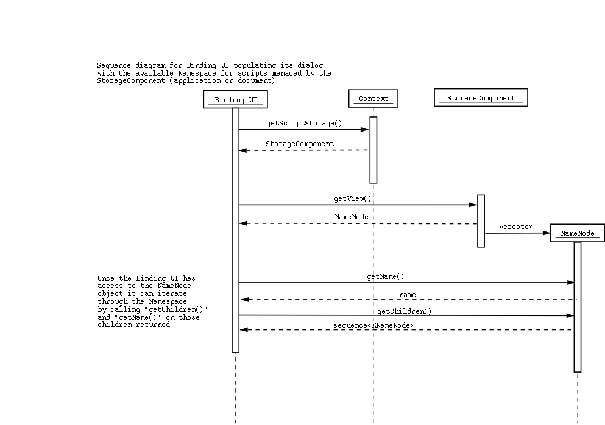
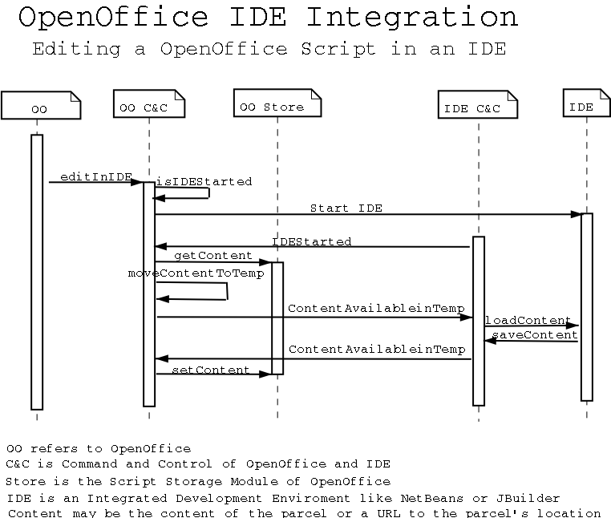

Language Independent Scripting Framework
Design Document - Last update: 16th August 2002
This document should only be read after having read the
Architecture Document
. This document contains:
Class & Object Interaction Diagrams

Binding Object Class Diagram(source
).

Binding Object Interaction Diagram(
source
).

Script Invocation Interaction Diagram(
source
).

Script Invocation Class Diagram(
source
).
Binding storage sequence diagrams

Actions available on Bindings( source
).
XBinding represents a binding, this is an event (string) and
script (string) pair. XBindingStore is the interface for access the
binding storage of a certain document or the application. It provides
store, remove and query functionality of binding objects implementing the
XBinding interface.

Query available on Bindings(source
).
OpenOffice - IDE Integration Interaction Diagrams

Editing a script in an IDE(source
)
Context:
- all the GUI used for binding and parcel management is implemented
in OpenOffice and it is embedded into the IDE using the OpenOffice Bean
- a temporary area of the filesystem is used to transfer files,
parcels selected by the user in the above OpenOffice GUI into the IDE
(this should be transparent to the user)
When a file is selected to be edited or a new file is created roughly
the dialog taking place is: - OpenOffice checks if the IDE is running,
if not it starts it
- OpenOffice moves the selected content (from the document)
into the temporary area and notifies the IDE that the content is there
- the IDE loads the content from the temporary area
- user edits, saves (maybe builds)
- at save the IDE notifies OpenOffice that the content is again
available in the temporary area
- OpenOffice (C&C module) moves the content back into the
document
Transferred content will most likely have to be a complete build environment
rather than one file only. Transfer can be optimized to transfer only changed
files rather than all the files. When a file is displayed all the corresponding
build environment has to be transferred to facilitate build, run and debug.

Debugging a script in an IDE(source
)
This diagram describes how OpenOffice and the IDE interact to facilitate
debugging. When the user starts up the IDE the debugging connection (e.g.
debugger from IDE attaching to the OpenOffice JVM) should be established.
This is the time to check whether individual runtimes or OpenOffice have
to be restarted in order to facilitate debugging from the IDE.
The dialog protocol is this:
- OpenOffice tries to start the IDE
- OpenOffice checks whether the runtime is running and is debug
enabled (if not then the runtime or OpenOffice has to be restarted
- OpenOffice starts the IDE
- when IDE signals that it is ready OpenOffice sends the parameters
needed for debugger attachment (host, port etc)
- the user sets breakpoints in the IDE
- at this point the user will invoke the script, this will be
either from the IDE or from OpenOffice; if it is from the IDE then the IDE
has to request an invocation from OpenOffice, if it is from OpenOffice then
nothing has to be done (a user action will invoke the script)
- after invocation the runtime will pause waiting for the debugger
(from the IDE) to attach, a message has to be sent to the IDE to start the
debugger
- the IDE debugger will attach to the runtime in OpenOffice
This protocol is somewhat Java specific, it might need changes for other
runtimes.

Debugging a script exception in an IDE(source
)
Exception handling is a variation of the code editing and debug enabling
diagrams. The diagram describes the dialog between OpenOffice and the IDE
when the IDE has not been started yet so the attachment to the OpenOffice
JVM from the IDE has to be done.
The dialog is the following:
- after invocation of a script when an exception is caught by
the script runtime check if the IDE is already running, if not and OpenOffice
is not running with debugger attachment enabled to the JVM then OpenOffice
has to be restarted
- if OpenOffice has been restarted then it is the user's responsibility
to get the script invoked again
- if the IDE was not running then it is started and the source
is loaded as described in the Edit diagram
- after this the debugger from the IDE attaches to the OpenOffice
JVM as described in the debug enabling diagram
- the user can evaluate variables at this point
- changing and saving the code at this point happens as already
described in the Edit diagram
Proposed file structure for scripting
The file structure for the application and the document will be
the same, the only difference is the structure for the document will stored
in the document zip file. The file structure is as follows
scripting/
|
+- java/
|
+- basic/
|
+- otherLanguage/
under the language specific folder
each script parcel has a separate
folder. The file and folder structure in a script parcel is arbitrary, it
depends on how the developer organizes files and folders of
the parcel.
A registry file exists at the script level in the directory structure
that identifies the scripts that are installed (in either the document
or application) or other metadata associated with the script.
Language-Specific & Logical Script names
Generic script name:
script://<sname>/[<qtype>['?'<query>]]
; name of a script functionality
sname =: <name>
; query type
qtype =: <name>
; query
query =: <qelm>(','<qelm>)*
; query element
qelm =: <word>'='<name>
Language specific script name:
script:///<lname>'?'<lpart>
; language runtime name
lname =: <name>
; language specific portion of name
lpart =: sequence of any printable characters
name =: <word>('.'<word>)*
word =: <alpha>(['-'|'_'](<alpha>|<digit>))*
alpha =: an alphabetical character as in rfc2396-1.6
digit =: a digit character as in rfc2396-1.6
Deployment DTD
<?xml version="1.0" encoding="UTF-8"?>
<!ELEMENT script (logicalname, languagename, dependencies, description?,
delivery)>
<!ELEMENT bundle (script+)>
<!ELEMENT logicalname EMPTY>
<!ELEMENT languagename EMPTY>
<!ELEMENT dependencies (dependfile+)>
<!ELEMENT description (#PCDATA)>
<!ELEMENT delivery (deliverfile+)>
<!ELEMENT deliverfile EMPTY>
<!ELEMENT dependfile EMPTY>
<!ATTLIST script
language CDATA #REQUIRED
deploymentdir CDATA #REQUIRED
>
<!ATTLIST logicalname
value CDATA #REQUIRED
>
<!ATTLIST languagename
value CDATA #REQUIRED
location CDATA #REQUIRED
>
<!ATTLIST dependfile
name CDATA #REQUIRED
isdeliverable (yes | no) #REQUIRED
>
<!ATTLIST deliverfile
name CDATA #REQUIRED
type (binary | data | source | resource) #REQUIRED
>
Sample deployment XML
<?xml version="1.0" encoding="UTF-8"?>
<!DOCTYPE bundle SYSTEM "deployment.dtd">
<bundle>
<script language="Java" deploymentdir="calc.convert.EuroConvert">
<logicalname value="calc.convert.EuroConvert"/>
<languagename value="com.sun.star.calc.EuroConvert"
location="convert.jar"/>
<dependencies>
<dependfile name="data/currenices.txt" isdeliverable="yes"/>
</dependencies>
<delivery>
<deliverfile name="convert.jar" type="binary"/>
<deliverfile name="currencies.txt" type="resource"/>
</delivery>
</script>
</bundle>
DTD for Script Registry
<?xml version="1.0" encoding="UTF-8"?>
<!ELEMENT script (logicalname, languagename, description, properties,
dependencies)>
<!ELEMENT logicalname EMPTY>
<!ELEMENT languagename EMPTY>
<!ELEMENT description (#PCDATA)>
<!ELEMENT properties (#PCDATA)>
<!ELEMENT dependencies (file)>
<!ELEMENT file EMPTY>
<!ATTLIST script
language CDATA #REQUIRED
rootdir CDATA #REQUIRED
>
<!ATTLIST logicalname
value CDATA #REQUIRED
>
<!ATTLIST languagename
value CDATA #REQUIRED
location CDATA #REQUIRED
>
<!ATTLIST file
name CDATA #REQUIRED
>
Sample XML for Script Registry
<?xml version="1.0" encoding="UTF-8"?>
<!DOCTYPE script SYSTEM "registry.dtd">
<script language="Java" rootdir="calc.convert.EuroConvert">
<logicalname value="calc.convert.EuroConvert"/>
<languagename value="com.sun.star.calc.EuroConvert"
location="convert.jar"/>
<description>A Euro Converter</description>
<properties>Other properties</properties>
<dependencies>
<file name="data/currencies.txt"/>
</dependencies>
</script>
Deployment Interfaces
XParcel
Interface access to a parcel file hierarchy by retrieving the hierarchy
and adding/removing content (using w3c standard urls with wildcards in them
to add/remove a number of files/folders). The parcel name can also be retrieved.
The interface XParcel is implemented by the Parcel service.
XParcelStore
provides access to parcels installed into a document or the application
context. Complete parcel packages (archived as zip) can be installed. Parcels
can be created (to fill with content through the XParcel interface) and parcels
can be removed. A list of all the installed parcels can also be obtained.
Script storage interfaces
The toplevel storage service is ScriptingStorage. Every document and
the application has one ScriptingStorage component that provides access to
the scripts stored in that context. ScriptingStorage implements several interfaces:
- XScriptAccessManager: provides access to script related data encapsulated in the ScriptInfo component
- XScriptImplAccess: resolves logical script names to language specific script names
- XNamingAccess: provide access to the logical naming of scripts
(it is designed to provide various views, a hierarchical one will be implemented)
- XBindingStore: provide access to the binding storage (described above)
- XParcelStore: provide access to the parcel storage (described above)
ScriptInfo is a service providing access to information related to one script. It contains two interfaces:
- XScriptInfo: provides access to script metadata
- XScriptStore: provides support for implementation of data persistence by the script
IDL Files
The following are the proposed
interfaces. In some cases, these are just placeholders and need further
work.
CannotResolveScriptNameException.idl
ScriptInfoAccessException.idl
ScriptRuntime.idl
ScriptRuntimeException.idl
ScriptRuntimeManager.idl
ScriptStorage.idl
XBinding.idl
XBindingStore.idl
XFunction.idl
XFunctionProvider.idl
XNameNode.idl
XNamingAccess.idl
XParcel.idl
XParcelStore.idl
XScriptAccessManager.idl
XScriptContext.idl
XScriptImplAccess.idl
XScriptInvocation.idl
XScriptStore.idl
XScriptURI.idl
ScriptURI.idl
XScriptNameResolver.idl
XScriptInfo.idl
XScriptStore.idl
ScriptInfo.idl
Parcel.idl
|